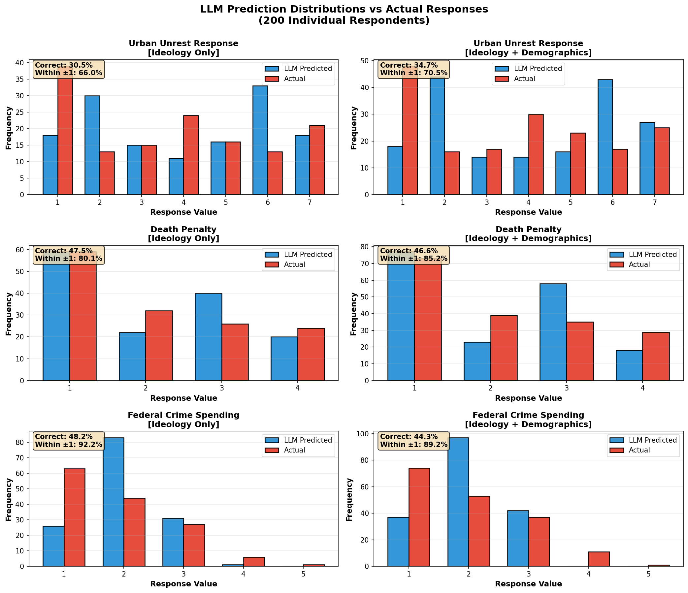

LLM Validation Experiment Results
Experiment: Individual-level crime policy prediction
Respondents Tested: 200 randomly sampled from ANES 2024
LLM Model: GPT-4o-mini (temperature=0)
Models Compared: (1) 46 policy variables only, (2) policy variables + gender, age, education
Per-Question Results
| Question |
Ideology Only (46 variables) |
+ Gender, Age, Education |
| Correct % |
Within ±1 % |
Correct % |
Within ±1 % |
Urban Unrest Response
1 = solve problems of racism/police violence, 7 = use all available force |
30.5% |
66.0% |
34.7% |
70.5% |
Death Penalty
1 = favor strongly, 4 = oppose strongly |
47.5% |
80.1% |
46.6% |
85.2% |
Federal Crime Spending
1 = increased a lot, 5 = decreased a lot |
48.2% |
92.2% |
44.3% |
89.2% |
Response Distributions
How to read: Blue bars = LLM predictions, Red bars = Actual responses.
Overlapping bars indicate accurate predictions.

Interpretation
Key Findings
- Per-question variation: Accuracy varies substantially across the three crime questions, reflecting different levels of ideological coherence.
- Demographics effect: Adding gender, age, and education improves predictions beyond ideology alone.
- Better than chance: All within ±1 rates exceed the baseline for random guessing on each scale.
Implications for Persona Chat
- Validation of design choice: These results validate providing explicit directional stances from data in system prompts, rather than letting the LLM infer positions.
- LLM useful for engagement, not inference: The chat feature is best for conversational interaction, not for predicting missing data.
Methodology
Held-Out Variables (Crime Policy)
V241397: Urban unrest response (1=solve problems of racism/police violence, 7=use all available force)V241308x: Death penalty (1=favor strongly, 4=oppose strongly)V241272x: Federal crime spending (1=increased a lot, 5=decreased a lot)
Model Specifications
- Ideology-Only Model: LLM receives respondent's answers to all non-crime policy questions (~46 variables)
- Full Model: LLM receives policy questions + demographics (gender, age, education)
- LLM: GPT-4o-mini (temperature=0 for reproducibility)
- Sample: 200 respondents randomly drawn from those with valid responses on all 3 crime variables
Evaluation Metrics
- Correct %: Percentage where LLM prediction exactly matches actual response (after rounding)
- Within ±1 %: Percentage where prediction is within 1 point of actual (more forgiving)
Raw Data
Full validation results available in JSON format: llm_validation_individuals.json
Appendix: Example Prompt
Below is the exact prompt sent to the LLM for respondent #1 (Full Model with demographics).
The system message is: "You are a political analyst predicting survey responses. Respond ONLY with the requested JSON, no explanation."
You are analyzing respondent #1 from a political survey. Based on their responses below, predict their positions on 3 crime-related questions.
DEMOGRAPHICS:
- Gender: Woman
- Age in years: -3
- Education: Some college
- Race/ethnicity: White NH
POLICY POSITIONS:
- Party identity importance (1=extremely, 4=not at all)
Scale: 1 Extremely important; 2 Very important; 3 Moderately important; 4 A little important; 5 Not at all important
Response: 5
- Trust government in Washington (1=always, 5=never)
Scale: 1 Always; 2 Most of the time; 3 About half the time; 4 Some of the time; 5 Never
Response: 3
- Trust court system (1=always, 5=never)
Scale: 1 Always; 2 Most of the time; 3 About half the time; 4 Some of the time; 5 Never
Response: 3
- Gov run by few big interests or benefit of all (1=few interests, 2=benefit all)
Scale: 1 Run by a few big interests; 2 For the benefit of all the people
Response: 1
- Does government waste much tax money (1=waste lot, 4=don't waste much)
Scale: 1 Waste a lot; 2 Waste some; 3 Don’t waste very much
Response: 2
- How often can people be trusted (1=always, 5=never)
Scale: 1 Always; 2 Most of the time; 3 About half the time; 4 Some of the time; 5 Never
Response: 2
- Gov services/spending 7pt (1=fewer services, 7=more services)
Scale: 1 Government should provide many fewer services; 2–6 Intermediate positions on the scale; 7 Government should provide many more services; 99 Haven’t thought much about this
Response: 4
- Health insurance 7pt (1=gov plan, 7=private)
Scale: 1 Government insurance plan; 2–6 Intermediate positions on the scale; 7 Private insurance plan; 99 Haven’t thought much about this
Response: 6
- Abortion 7pt (1=always permit, 7=never permit)
Scale: 1 Abortion should always be permitted without restrictions; 2–6 Intermediate positions on the scale; 7 Abortion should never be permitted; 99 Haven’t thought much about this
Response: 5
- Guaranteed job/income 7pt (1=gov should, 7=people on own)
Scale: 1 Government should see to jobs and standard of living; 2–6 Intermediate positions on the scale; 7 Government should let each person get ahead on own; 99 Haven’t thought much about this
Response: 6
- Gov assistance to Blacks 7pt (1=help, 7=no special help)
Scale: 1 Government should help blacks; 2–6 Intermediate positions on the scale; 7 Blacks should help themselves; 99 Haven’t thought much about this
Response: 4
- Environment-business tradeoff 7pt (1=protect env, 7=business priority)
Scale: 1 Tougher regulations on business needed to protect environment; 2–6 Intermediate positions on the scale; 7 Regulations to protect environment already too much a burden on business; 99 Haven’t thought much about this
Response: 2
- Federal budget spending: Social Security
Scale: 1 Increased a lot; 2 Increased a little; 3 Kept the same; 4 Decreased a little; 5 Decreased a lot
Response: 3
- Federal budget spending: public schools
Scale: 1 Increased a lot; 2 Increased a little; 3 Kept the same; 4 Decreased a little; 5 Decreased a lot
Response: 3
- Federal budget spending: tightening border security
Scale: 1 Increased a lot; 2 Increased a little; 3 Kept the same; 4 Decreased a little; 5 Decreased a lot
Response: 2
- Federal budget spending: highways
Scale: 1 Increased a lot; 2 Increased a little; 3 Kept the same; 4 Decreased a little; 5 Decreased a lot
Response: 3
- Federal budget spending: aid to the poor
Scale: 1 Increased a lot; 2 Increased a little; 3 Kept the same; 4 Decreased a little; 5 Decreased a lot
Response: 3
- Federal budget spending: protecting the environment
Scale: 1 Increased a lot; 2 Increased a little; 3 Kept the same; 4 Decreased a little; 5 Decreased a lot
Response: 2
- Approve/disapprove how colleges and universities are run
Scale: 1 Approve very strongly; 2 Approve somewhat strongly; 3 Approve not very strongly; 4 Neither approve nor disapprove; 5 Disapprove not very strongly; 6 Disapprove somewhat strongly; 7 Disapprove strongly
Response: 6
- Approve/disapprove DEI (diversity, equity, inclusion)
Scale: 1 Favor a great deal; 2 Favor a moderate amount; 3 Favor a little; 4 Neither favor nor oppose; 5 Oppose a little; 6 Oppose a moderate amount; 7 Oppose a great deal
Response: 4
- Country better off if we just stayed home
Scale: 1 Agree strongly; 2 Agree somewhat; 3 Disagree somewhat; 4 Disagree strongly
Response: 4
- Use force to solve international problems (1=extremely willing, 7=extremely unwilling)
Scale: 1 Extremely willing; 2 Very willing; 3 Moderately willing; 4 A little willing; 5 Not at all willing
Response: 4
- Favor/oppose requiring ID when voting
Scale: 1 Favor a great deal; 2 Favor moderately; 3 Favor a little; 4 Neither favor nor oppose; 5 Oppose a little; 6 Oppose moderately; 7 Oppose a great deal
Response: 1
- Favor/oppose allowing felons to vote
Scale: 1 Favor a great deal; 2 Favor moderately; 3 Favor a little; 4 Neither favor nor oppose; 5 Oppose a little; 6 Oppose moderately; 7 Oppose a great deal
Response: 4
- Helpful/harmful if president didn't have to worry about Congress/courts
Scale: 1 Extremely helpful; 2 Moderately helpful; 3 A little helpful; 4 Neither helpful nor harmful; 5 A little harmful; 6 Moderately harmful; 7 Extremely harmful
Response: 6
- How much trust in news media (1=great deal, 5=none)
Scale: 1 None; 2 A little; 3 A moderate amount; 4 A lot; 5 A great deal
Response: 2
- Likelihood sexual harassment would keep you from voting for candidate (1=extremely, 5=not at all)
Scale: 1 Extremely likely; 2 Very likely; 3 Moderately likely; 4 Slightly likely; 5 Not likely at all
Response: 2
- How much larger is income gap today
Scale: 1 Much larger; 2 Somewhat larger; 3 About the same; 4 Somewhat smaller; 5 Much smaller
Response: 3
- Government action about rising temperatures
Scale: 1 Should be doing a great deal more; 2 Should be doing a moderate amount more; 3 Should be doing a little more; 4 Currently doing the right amount; 5 Should be doing a little less; 6 Should be doing a moderate amount less; 7 Should be doing a great deal less
Response: 2
- Require employers to offer paid leave to parents
Scale: 1 Favor a great deal; 2 Favor moderately; 3 Favor a little; 4 Neither favor nor oppose; 5 Oppose a little; 6 Oppose moderately; 7 Oppose a great deal
Response: 5
- Approve/disapprove transgender bathroom use matching identity
Scale: 1 Favor a great deal; 2 Favor a moderate amount; 3 Favor a little; 4 Neither favor nor oppose; 5 Oppose a little; 6 Oppose a moderate amount; 7 Oppose a great deal
Response: 4
- Favor/oppose banning transgender girls from K-12 girls sports
Scale: 1 Favor a great deal; 2 Favor a moderate amount; 3 Favor a little; 4 Neither favor nor oppose; 5 Oppose a little; 6 Oppose a moderate amount; 7 Oppose a great deal
Response: 4
- Favor/oppose laws protecting gays/lesbians from job discrimination
Scale: 1 Favor strongly; 2 Favor not strongly; 3 Oppose not strongly; 4 Oppose strongly
Response: 4
- Should gay/lesbian couples be allowed to adopt children
Scale: 1 Feels very strongly should be permitted to adopt; 2 Feels somewhat strongly should be permitted to adopt; 3 Feels not strongly should be permitted to adopt; 4 Feels not strongly should not be permitted to adopt; 5 Feels somewhat strongly should not be permitted to adopt; 6 Feels very strongly should not be permitted to adopt
Response: 1
- Right of gay/lesbian couples to legally marry
Scale: 1 Favor a great deal; 2 Favor a moderate amount; 3 Favor a little; 4 Neither favor nor oppose; 5 Oppose a little; 6 Oppose a moderate amount; 7 Oppose a great deal
Response: 1
- Policy toward unauthorized immigrants (1=felony/deport, 5=no penalty)
Scale: 1 Make all unauthorized immigrants felons and send them back; 2 Guest worker program (remain to work for limited time); 3 Allow remain & qualify for citizenship if meet certain requirements; 4 Allow remain & qualify for citizenship without penalties
Response: 3
- Favor/oppose ending birthright citizenship
Scale: 1 Favor a great deal; 2 Favor moderately; 3 Favor a little; 4 Neither favor nor oppose; 5 Oppose a little; 6 Oppose moderately; 7 Oppose a great deal
Response: 2
- Children brought illegally: send back or allow to stay
Scale: 1 Great deal sent back; 2 Moderate amount sent back; 3 A little sent back; 4 A little allowed to live & work in US; 5 Moderate amount allowed; 6 Great deal allowed
Response: 5
- Favor/oppose building wall on border with Mexico
Scale: 1 Favor a great deal; 2 Favor moderately; 3 Favor a little; 4 Neither favor nor oppose; 5 Oppose a little; 6 Oppose moderately; 7 Oppose a great deal
Response: 4
- How important to speak English in US (1=extremely, 5=not at all)
Scale: 1 Very important; 2 Somewhat important; 3 Not very important; 4 Not at all important
Response: 2
- Favor/oppose US giving weapons to help Ukraine fight Russia
Scale: 1 Favor a great deal; 2 Favor moderately; 3 Favor a little; 4 Neither favor nor oppose; 5 Oppose a little; 6 Oppose moderately; 7 Oppose a great deal
Response: 2
- Favor/oppose US giving military assistance to Israel
Scale: 1 Favor a great deal; 2 Favor moderately; 3 Favor a little; 4 Neither favor nor oppose; 5 Oppose a little; 6 Oppose moderately; 7 Oppose a great deal
Response: 4
- Favor/oppose US giving humanitarian aid to Palestinians
Scale: 1 Favor a great deal; 2 Favor moderately; 3 Favor a little; 4 Neither favor nor oppose; 5 Oppose a little; 6 Oppose moderately; 7 Oppose a great deal
Response: 4
- Side more with Israelis or Palestinians
Scale: 1 Side a lot with Israelis; 2 Side a moderate amount with Israelis; 3 Side a little with Israelis; 4 Side with both equally; 5 Side a little with Palestinians; 6 Side a moderate amount with Palestinians; 7 Side a lot with Palestinians; 8 Side with neither
Response: 4
- Approve/disapprove of protests against war in Gaza
Scale: 1 Approve a lot of protests; 2 Approve a moderate amount of protests; 3 Approve a little of protests; 4 Neither approve nor disapprove of protests; 5 Disapprove a little of protests; 6 Disapprove a moderate amount of protests; 7 Disapprove a lot of protests
Response: 4
Based on the above, predict this person's responses to these 3 crime questions:
1. Urban unrest: Best way to deal with urban unrest and rioting?
Scale: 1 Solve problems of racism and police violence; 2-6 Intermediate; 7 Use all available force to maintain law and order
2. Death penalty: Do you favor or oppose the death penalty for persons convicted of murder?
Scale: 1 Favor strongly; 2 Favor not strongly; 3 Oppose not strongly; 4 Oppose strongly
3. Crime spending: Should federal spending on dealing with crime be increased, decreased, or kept the same?
Scale: 1 Increased a lot; 2 Increased a little; 3 Kept the same; 4 Decreased a little; 5 Decreased a lot
Respond with ONLY a JSON object: {"urban_unrest": X, "death_penalty": Y, "crime_spending": Z}
where X, Y, Z are integers on the scales indicated above.
Ground truth for this respondent:
Urban unrest = 2,
Death penalty = 3,
Crime spending = 1
LLM prediction:
Urban unrest = 4.0,
Death penalty = 2.0,
Crime spending = 3.0